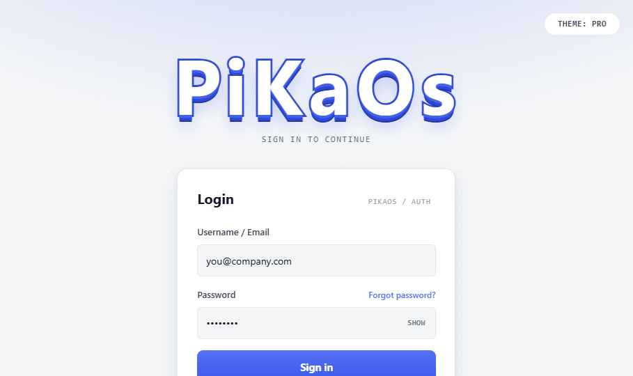
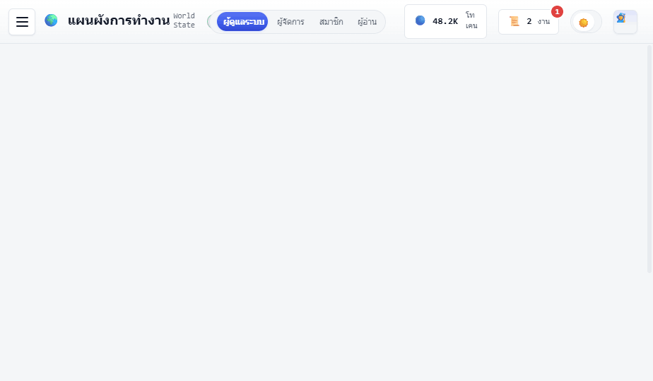
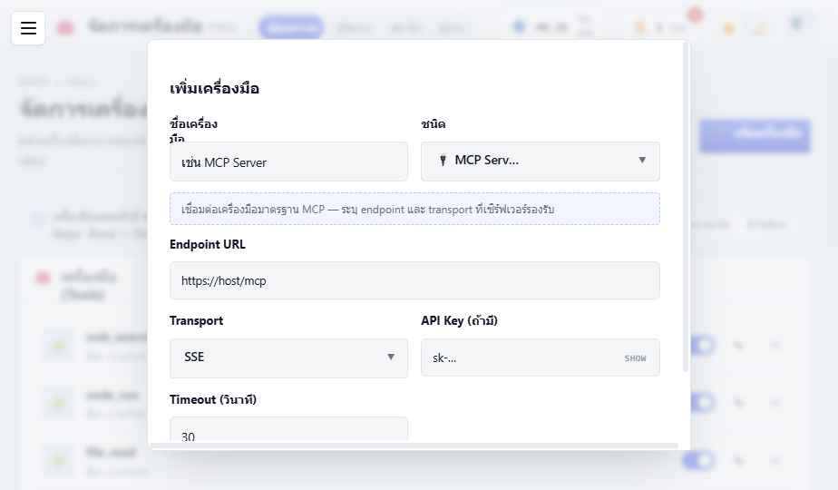
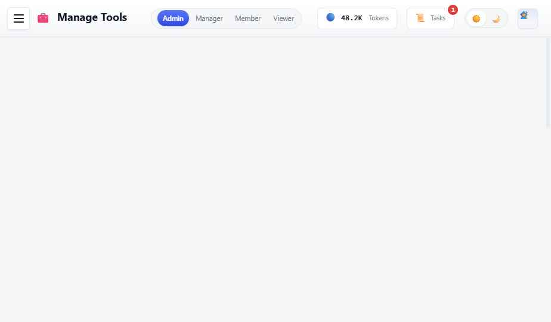
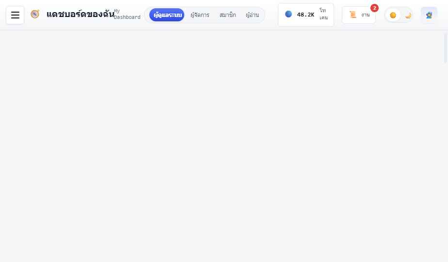
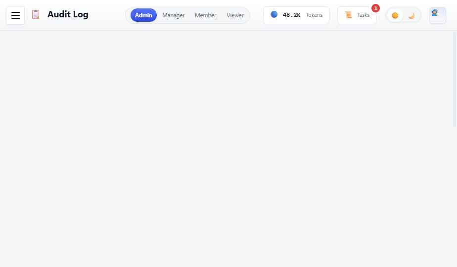

ทำไมต้องมี PiKaOs — และความสำเร็จวัดด้วยอะไร
Workspace ภาษาไทยที่คุณ “บริหารทีม AI agent” — calm professional UI ห่อด้วยกลิ่น RPG บาง ๆ. หัวใจของ product คือ engine ที่สั่งงาน agent + HERMES ที่ orchestrate หลาย agent
ภาพหน้าจอจากแอปจริง — ให้เห็นรูปธรรมก่อนลงรายละเอียดระบบ






4 บทบาทมาตรฐาน (admin สร้างเพิ่มได้) + HERMES ผู้ช่วย AI ส่วนกลาง
เส้นทางการใช้งานหลัก 5 เคส — ผู้กระทำ (สิทธิ์) → ผลลัพธ์
agent.createquest.runuser.managecodex.manage / ทุกคน (ค้น)options.manage → เลือกชนิด (MCP/LINE/Telegram/HTTP/SQL/SMTP/Webhook) → กรอกฟิลด์ (ค่าลับ=secret) → agent ใช้เครื่องมือที่ตั้งค่าได้จัดกลุ่มตามเมนูจริง 4 กลุ่ม — 24 หน้าจอ · สิทธิ์กำกับในวงเล็บ
คุณภาพของระบบ — ไม่ใช่ฟีเจอร์ แต่เป็นข้อกำหนดที่ทุกฟีเจอร์ต้องผ่าน
| ID | ด้าน | ข้อกำหนด |
|---|---|---|
| NFR-01 | การใช้งาน | Thai-first · หลายภาษา · คอนทราสต์เพียงพอ · รองรับ prefers-reduced-motion |
| NFR-02 | ความสม่ำเสมอ | UI ทุกหน้าใช้ design system เดียว (โทเคน + คอมโพเนนต์กลาง) ไม่ hardcode สี/คอนโทรล |
| NFR-03 | ประสิทธิภาพ | SPA โหลดครั้งเดียว · งานยาวแยกไป worker (arq) · แอนิเมชัน spring ที่ใช้ร่วม |
| NFR-04 | ความปลอดภัย | RBAC ละเอียดระดับการกระทำ · ค่าลับแบบ secret · JWT + audit log ตรวจสอบได้ |
| NFR-05 | ความทนทานข้อมูล | สเตตคงอยู่ — เดิม localStorage → ตอนนี้ Postgres (durable) + step-persistence |
| NFR-06 | การบำรุงรักษา | component-first · 1 ไฟล์/1 คอมโพเนนต์ · เพิ่มภาษา/เครื่องมือ = เพิ่มไฟล์/สเปกที่เดียว |
| NFR-07 | Responsive | ใช้ได้ตั้งแต่จอเล็กถึงเดสก์ท็อป (เว็บแอป ไม่ใช่แอปเนทีฟ) |
กราฟด้านบน: ที่ ทำแล้ว (เขียว) ต่อกับที่ จะทำต่อ (ไม่มีสี) เป็นกราฟเดียวกัน · ข้างล่างสรุปเป็นข้อความ (มีแล้ว / จะทำต่อ)
flowchart LR
classDef built fill:#e9f7ef,stroke:#12a150,stroke-width:1.5px,color:#0f5132;
classDef todo fill:#ffffff,stroke:#c2c9d3,color:#3e4654;
Browser["🖥️ Browser · SPA"]:::built
API["⚡ FastAPI"]:::built
Redis[("🧠 Redis · queue · pub/sub")]:::built
PG[("🐘 Postgres + pgvector")]:::built
Minio[("📦 MinIO")]:::built
Worker["🛠️ arq worker · agent loop"]:::todo
Tables[("⚙️ runs · run_steps · subtasks")]:::todo
Hermes["🧭 HERMES · DAG"]:::todo
LLM["🔌 LLM adapter · 🧰 Tools · 📚 RAG"]:::todo
Browser --> API
API --> PG
API --> Minio
API -->|enqueue| Redis
Redis -->|queue| Worker
Worker --> Tables
Worker --> Hermes
Worker --> LLM
Worker -.->|pub/sub| Redis
เพิ่ม arq worker (image เดิม, entrypoint ใหม่) + ตารางใหม่ไม่กี่ตัว — ไม่เพิ่ม infra เลย ใช้ Redis + Postgres ที่มีอยู่
เลือกให้เบา ทนทาน และไม่เพิ่ม infra เกินจำเป็น
| หัวข้อ | เลือก | เหตุผล |
|---|---|---|
| Job / queue | arq (Redis) | มี Redis อยู่แล้ว · async-native · เบากว่า Celery · Temporal เกินจำเป็น |
| Durability | step-persistence | เขียนทุก step ลง run_steps → replay/resume ตอน crash โดยไม่ต้อง Temporal |
| Orchestration | HERMES = reactive state-machine | DAG ใน Postgres ขับด้วย event → ไม่กิน worker slot ระหว่างรอ · ทน restart |
| Streaming | per-step | 1 event/step → WS เบา โค้ดง่าย · token-delta ค่อยอัปเกรดทีหลัง |
| Scope | HERMES multi-agent | product เป็น multi-agent อยู่แล้ว · single-agent = DAG node เดียว |
| LLM | multi-model (adapter เดียว) | OpenAI (GPT) · Anthropic (Claude) · Local — เลือกต่อ agent · tool-use normalize ข้าม provider |
1 agent run = agent ทำ 1 task ผ่าน loop เรียก LLM + tool. รันโดย arq worker, เขียนทุก step ลง run_steps
run:<id>:cancel
resume from run_steps
แตก quest เป็น DAG ของ subtask แล้วมอบหมายหลาย agent. เป็น reactive state-machine — 3 job เล็กขับเคลื่อน state ที่เก็บใน Postgres
✅ users · documents มีแล้ว · ส่วนที่เหลือ 🟡 เพิ่มผ่าน Alembic · ความสัมพันธ์เต็ม → หน้า ER Diagram ถัดไป
ความสัมพันธ์เต็มของฐานข้อมูล · ✅ มีแล้ว: users, documents · 🟡 ที่เหลือยังไม่ทำ (วางโครงไว้)
erDiagram
roles ||--o{ users : "has role"
users ||--o{ agents : owns
users ||--o{ documents : owns
users ||--o{ notifications : receives
roles }o--o{ permissions : role_perms
users }o--o{ permissions : "user_perms override"
rooms ||--o{ quests : holds
rooms ||--o{ agents : "placed in"
quests ||--o{ runs : dispatches
agents ||--o{ runs : executes
runs ||--o{ run_steps : worklog
runs ||--o{ subtasks : "orchestrates HERMES"
agents ||--o{ subtasks : assigned
subtasks ||--|| runs : "child run"
agents }o--o{ tools_config : granted
runs ||--o{ notifications : triggers
users {
uuid id PK
string username
string email
string role FK
string status
int quota
int used
}
documents {
uuid id PK
uuid owner_id FK
string kind
string object_key
vector embedding
}
agents {
uuid id PK
uuid owner_id FK
string role
string status
string model
uuid room_id FK
}
rooms {
uuid id PK
string name
string template
}
quests {
uuid id PK
string title
uuid room_id FK
string status
}
runs {
uuid id PK
string kind
uuid parent_run_id FK
uuid agent_id FK
uuid quest_id FK
string status
}
subtasks {
uuid id PK
uuid orch_run_id FK
uuid assignee_agent_id FK
uuid child_run_id FK
json deps
string status
}
run_steps {
uuid id PK
uuid run_id FK
int seq
string kind
json content
}
tools_config {
uuid id PK
string type
json config
bool enabled
}
roles {
string key PK
string name
}
permissions {
string key PK
string group
}
notifications {
uuid id PK
uuid user_id FK
uuid run_id FK
string type
bool read
}
ทุก run (HERMES + ลูก) publish 1 event ต่อ step → browser เห็น timeline + สถานะ agent สด
/ws?token=
subscribe per quest/run
per-step (ไม่ token-delta)
25 สิทธิ์ใน 5 กลุ่ม · 4 บทบาทมาตรฐาน (ลบไม่ได้) + override รายคน
audit.view · พลอย (member) −deny quest.run ชั่วคราวไล่จากแกนเครื่องยนต์ → LLM adapter → HERMES → tools → RAG → RBAC
ตัดสินใจในเซสชันถัด ๆ ไป